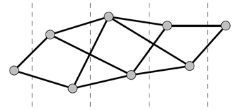
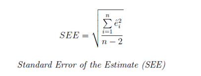
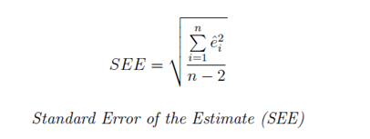
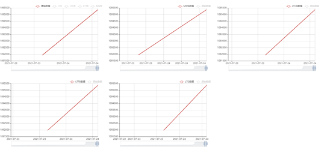

时序数据可视化的降采样算法
问题描述
工业场景中，时序数据的可视化是一个无法回避的话题。时序数据的超大数据量给图形的展示性能带来了挑战，而通过降采样的方式减少图形的展示点数来迎合性能的同时，又会带来算法复杂度、算法可伸缩以及正确性等多方面的权衡。
下面通过几种常用的可视化降采样算法的研究和实践对比，为时序数据的可视化降采样算法选择提供参考。我们使用实际生产中的一个案例作为算法描述的基础：需求将10w点降采样到4000，以适配页面的展示效果。
直觉分桶算法
在一般情况下，面对一个复杂问题最先起作用的往往是我们的直觉。所以在面对大数据集降采样的问题时最先想到的这类算法统称之为直觉算法。
Mode-Median-Bucket
模式中位数分桶算法，从大类来看是一个分桶算法，从取样方式来看分成了众数取样和中位数取样。
1 | 首先确定桶的数量即threshold等于4000，那么被分配到每个桶的数据点就是25。 |
Min-Std-Error-Bucket
最小标准误差分桶算法，从大类来看是一个分桶算法，从取样方式来看基于线性回归采用标准误差（SEE - standard error of estimate）公式作为取样的依据。
 

1 | 首先确定桶的数量即threshold等于4000，首尾两个桶都只包含一个点确保数据集的起点和终点被选中，其他点平均分配到桶。 |
算法的主要缺陷在于选取最小标准误差的时候总是将图形变的平滑，所以局部的极值和全局的极值总是被忽略。
Longest-Line-Bucket
最长线段分桶算法，相对于MSEB算法保留了局部极值和全局极值，算法过程类似。
1 | 1， 将每个桶的点和下一个桶的点两两连线段，每个线段记为一条边 |
制图泛化技术
上面描述的三个直觉算法一定程度上都能够解决问题，然而又或多或少引入了新的问题。比如MMB可能带来短视的问题，MSEB和LLB引入了额外的复杂度和效率问题。我们参考了几个制图泛化的技术，对直觉分桶算法进行改进。
Douglas-Peucker algorithm
多边形逼近算法，通过递归来逐步逼近原图形效果。
1 | 首先定义一个threshold（注意这个threshold和桶没有关系）表示点到线段的最大距离。 |
Visvalingam–Whyatt algorithm
算法的主要思想是基于点的重要性或者意义来寻找能够代表图形的特征点，而点的重要性是通过有效区域即点构成三角形的面积来判定。
遍历数据集中的每一个点，将该点和邻近的两个点来构成三角形，三角形的区域即为点的有效区域。当有效区域较小时，认定该点对于图形的重要性较低。
1 | 1， 首先计算每个点的有效区域，找出有效区域最小的点，剔除； |
上面两种绘图泛化技术的特点是比较简单并且在降低数据量方面表现的相当有效。缺点是基于全局的返回可能会损失局部的特点，比如whyatt算法在删除点方面，可能会把一段时间的数据全部删除，这就给人造成了数据缺失的错觉，相应的图形表现力也大打折扣。如下图所示，黑色图形是算法处理后的图形。
Largest Triangle Algorithms
最大三角形算法是结合了Whytt算法和直觉算法的改良版，通过三角形来形成有效区域从而对数据点的重要性进行量化，再结合直觉算法中分桶思想最大程度的保留图形的特点。
Largest-Triangle-One-Bucket
LTOB最大三角形单桶算法，使用了Whytt算法有效区域的思路，再结合直觉算法中的分桶。
1 | 1, 首先确定桶的大小，并将数据点平分到桶中，注意首尾点各占一个桶确保选中 |
LTOB算法相比原始的Whytt算法，确保了点分布的相对均匀。每个桶都有一个代表点来表示，从而连接成为一个全局的路由。
Largest-Triangle-Three-Buckets
LTTB最大三角形三桶算法，相比于单桶的短视问题，将有效区域的计算延伸到前后两个桶。
1 | 1， 首先确定桶的大小，并将数据点平分到桶中，注意首尾点各占一个桶确保选中 |
LTTB算法相比LTOB算法，一定程度上减轻了短视的问题。同时通过固定三角形的两个点的方式，提升了算法的效率。
Largest-Triangle-Dynamic
LTD动态最大三角形，正如名字所说的那样可以动态的决定桶中的数据点个数。在上面提到的所有分桶算法中，我们都使用了同样的分配算法，即首尾各占一个桶，其他均分。这种分配方法无疑是最简单的，并且大多数情况是有效的。
但是当我们遇到一些特殊形状的图形，如数据分布不均匀，一部分时间数据变化很平缓，部分时间变化很陡峭，如下图所示。我们的分桶方式就会显得力不从心。

这时候就需要一个动态的的分桶算法，当数据平缓的时候桶中的点相对较多，当数据陡峭的时候桶中的点相对较少，以此来确保在平缓区域分配较少的桶来选取较少的点，而在陡峭区域分配较多的桶来选取较多的点。
1 | 1, 首先确定桶的大小，并将数据点平分到桶中，注意首尾点各占一个桶确保选中 |
LTD算法相比LTTB算法在不规则图形上有更好的表现力，但是在规则图形上可能还不如LTTB。LTD的效率显然远不如LTTB，同时循环迭代的终止条件并没有比较好的参考数据需要不断尝试，这在某种程度上增加了算法的复杂性。
总结回顾
在完成了以上六个算法的研究学习之后，我们可以对各个算法的优劣进行定性的比较，为我们之后的工作提供指导和帮助。
参照的指标有以下几个：
- 速度（Speed），算法的运行速度无疑是很重要的因素，一般我们页面的的响应需要控制在3s以内，算法的速度也应该参考这个基准
- 可伸缩（Scalability），当数据量持续增长的时候，算法的表现不应发生明显变化
- 复杂性（Complexity），算法的复杂度在于理解和实现的难度，一个量化的直接就是LOC即实现的代码行
- 适配能力（Portability），算法在各个环境和语言中支持的程度
- 正确性（Correctness），算法的运行结果对于原图形的表现力
从上图可以看出LTTB算法在绝大多数情况下都是表现优异的，当然基于场景的差异可能其他算法会有更好的正确性。所以我们的决策顺序可以是优先LTTB，当LTTB不满足呈现的需求时，我们可以尝试其他算法以获取更好的结果。
最后我们基于我们实际的两组数据进行了测试，一组为单调递增的累积损伤数据，一组为波动的异常诊断数据。
